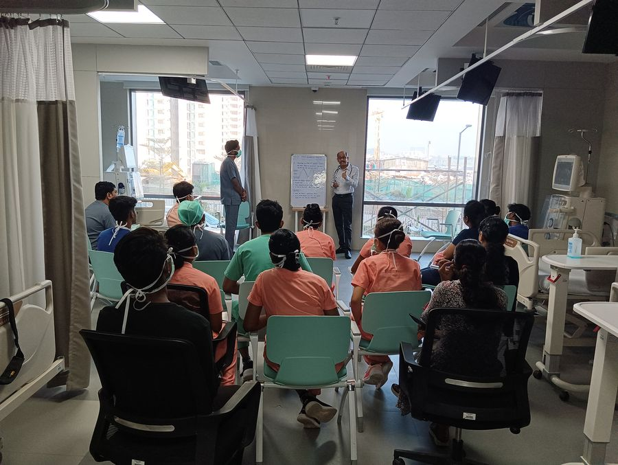

For patients who screen positive, CFYKF doesn't stop at detection. We subsidise dialysis and transplant costs, guide families through treatment decisions, and stay with patients through the years of care that follow.

Every patient CFYKF identifies through a screening camp is offered a path forward — not just a diagnosis.
Regular dialysis is out of reach for most patients on a fixed or low income. CFYKF subsidises the monthly cost at partner dialysis centres, so treatment doesn't stop when the money runs out.
For patients who reach end-stage kidney failure, we guide families through the transplant decision — evaluating suitability, connecting with partner hospitals, and subsidising the cost where we can.
Transplant recipients need lifelong immunosuppressive medication to protect the new kidney. We help subsidise this ongoing cost, which can otherwise put a transplant's success at risk.
Structured education sessions help dialysis and transplant patients understand their condition, treatment and lifestyle adjustments — with continuous follow-up for a better quality of life.
CFYKF trustee Verghese Jacob brings the patient's perspective to our work — living proof that with the right support, a kidney diagnosis isn't the end of the story. Read more about our trustees →
Whether you've just received a diagnosis or are already managing dialysis or a transplant, our team can talk you through what support is available.